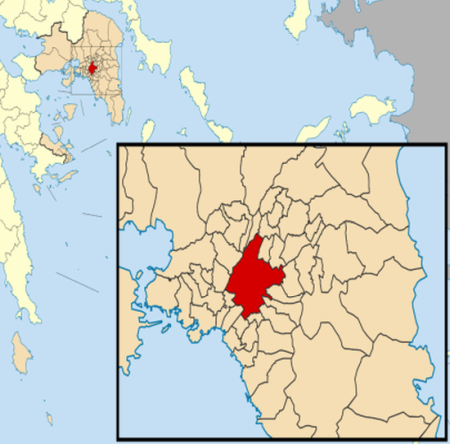
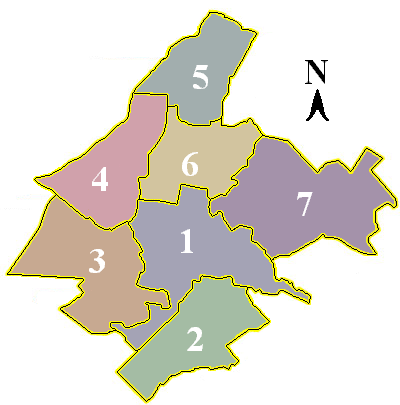
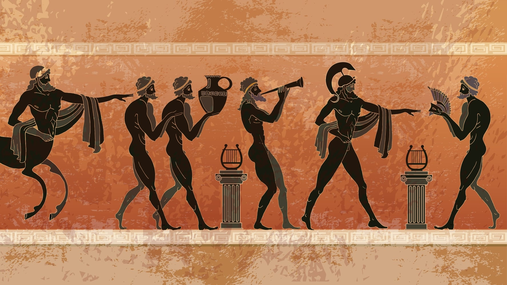

Geographie
- 

- 
Lage
Athen liegt in der weiträumigsten Ebene der Landschaft Attika mit den Flüssen Ilisos und Kifisos und ist an drei Seiten von Gebirgszügen umgeben, vom Hymettos (1026 m), vom Pentelikon (1107 m), vom Parnitha (1413 m) und Ägaleo (468 m), die vierte Seite öffnet sich zum Meer, dem Saronischen Golf.
Klima
Das Stadtklima Athens ist ein ganz besonderes in Griechenland und auch in Europa und galt vor der Entwicklung der Stadt zum fast das gesamte attische Becken überwuchernden «Wasserkopf» als eines der besten der Welt und ist auch heute noch trocken und weitgehend mild. Nicht wenige zogen deshalb nach Athen oder verbrachten längere Zeit dort, beispielsweise Sophie de Marbois-Lebrun, die eine Villa am nördlichen Rand der Stadt erbauen ließ und ihren Lebensabend dort verbrachte. Walther Judeich schrieb 1931 in seiner Topographie von Athen.
Stadtbezirke
Das alte Athen des 18. Jahrhunderts umfasst in etwa die Viertel südlich und nördlich der Akropolis, die Erweiterung nach Osten und Nordosten (Syntagma bis Omonia) ist seit dem 19. Jahrhundert das Zentrum der Stadt. Wenngleich sich die Bewohner der Halbinsel Attika als Athener verstehen, beschränkt sich die Stadt Athen administrativ auf ein Gebiet, das weniger als eine Million Einwohner umfasst.
Geschichte
Streit der Götter
Der Streit von Poseidon und Athena um das attische Land fiel in seine «Amtszeit». Athena pflanzte den ersten Ölbaum neben das Erechtheidon. Kranaos wurde von Amphiktyon vertrieben, welcher seinerseits von Erichthonius , dem Sohn der Athena, vertrieben wurde. Nach ihm regierte sein Sohn Pandion. Pandions Nachfolger war sein Sohn Erechtheus. Nach Erechtheus regierten seine Söhne Kekrops II und Pandion II, bis diese vertrieben wurden, Pandion II flieht nach Megara. Aigeus, der Sohn Pandions II, regiert Athen bis er sich ins Meer stürzt, weil er Schiffe mit schwarzen Segeln ankommen sieht und denkt, die Exkursion seines Sohns Theseus sei fehlgeschlagen und dieser verunglückt. Der nächste König ist Theseus. Theseus ist der Heros der Athener, er tötet Minotauros, welches dieTributpflicht Athens gegenüber Kreta beendet, er kämpft außerdem gegen die Kentauren, mit Herakles gegen die Amazonen, und entführt die junge Helena aus Sparta nach Attika.
Übernahme
Um 3000 v. Chr.erste Siedlungsspuren (Agoràgelände, Südhang der Akropolis) um 1400 v. Chr.Akropolishügel wird zur befestigten Königsburg. 594/593 v. Chr. Solon: neue Verfassung (keine Schuldknechtschaft, Rat der 400) (Peisistratos, Hippias, Hipparch).508/507 v. Chr. Kleisthenes (Beginn der Demokratie): Rat der 500, Scherbengericht. 490 - 479 v. Chr. Themistokles, Kriege mit Persern, Athen wird verwüstet, nach endgültigem Sieg Bau der Themistokleischen Stadtmauer. 461 v. Chr. Perikles wird erster Mann in Athen, Ausbau der Akropolis (30jähriger Waffenstillstand mit Sparta, (399) Gifttod-Verurteilung des Sokrates, (338) Makedonenkönig Philipp II., (336) Alexander der Große) römischer Kaiser Hadrian gründet die Hadriansstadt rings um das von ihm vollendete Olympieion. Christentum läßt Athen zu "Landstädtchen" werden: Theodosius II (christlich) wandelt Tempel in Kirchen um, läßt antike Kultstätten schließen Kaiser Justinian schließt Athener Universität und Plantonische Akademie. Besetzung durch: Kreuzzüge (Palast des europ. Herzogs in den Propyläen der Akroplis) katalanische Söldner Venezianer.
Die Türken
Sultan Mehmet II wandelt Parthenon in Moschee um venezianische Granate zerstört den Parthenon Freiheitskampf, Athen zurückerobert durch Griechen Zurückeroberung durch Türken. Türken räumen endgültig Athen. Athen wird Hauptstadt Griechenlands (König Otto I.). Aufnahme von rund 300 000 Flüchtlingen nach kleinasiatischer Katastrophe, neue Stadtviertlel entstehen.
Kultur und Kunst
- 
Aus allen Teilen der antiken Welt kamen zur klassischen Zeit Wissenschaftler nach Athen, dies wurde von dieser gefördert. Es wurde unterschieden zwischen Xenoi und Metöken, wobei erstere die Personen bezeichnete, die einen kurzen Studienaufenthalt verbrachten, zweitere permanent in der Stadt lebten und Bürgerrechte genossen, dazu zählten Philosophen und Ärzte wie Anaxagoras aus Klazomenai, Protagoras aus Abdera und Hippokrates aus Kos. In römischer Zeit war Athen ein beliebter Studienort. Im 18. Jahrhundert kamen Archäologen und Kunsthistoriker nach Athen und verbrachten lange Zeiten mit der Erforschung der Antike. Mit der Gründung des Königreiches Griechenland wurden die ersten zwei Universitäten des Landes gegründet, zuvor gab es nur die Ionische Akademie auf Korfu. Bis auf Niederlassungen englischer und amerikanischer Universitäten, die einen Athens Campus führen, ist Griechisch die einzige Lehrsprache, und das Studium von Ausländern in Athen eher die Ausnahme. In Athen befinden sich jedoch 17 ausländische archäologische Institute.
In Athen haben ihren Sitz:
Der Konzertsaal Megaro Mousikis
Das Nationaltheater
Das Iródion
Das Theater auf dem Lykavittos.
Die griechische Nationalbibliothek
Die Stavros Niarchos Foundation Cultural Center
Athen hat im Lauf der Geschichte auch zahlreiche ausländische Künstler inspiriert. Alle zwei Jahre im Herbst findet die Athens Biennale statt welche zeitgenössische Kunst zeigt. Einen Bezug zu Athen hatten oder haben Kunstsammler wie Antonis Benakis, George Costakis, Iris Clert, George Economou, Alexander Iolas, Dakis Joannou und Stavros Niarchos.
Sehenswürdigkeiten
Top 3:
Akropolis
Dionysostheater
Akropolismuseum
Wirtschaft
Lage
Laut einer Studie aus dem Jahr 2014 erwirtschafte der Großraum Athen ein Bruttoinlandsprodukt von 129,62 Milliarden US-Dollar in Kaufkraftparität. Athen ist vor Thessaloniki auch wirtschaftlich die wichtigste Metropole des Landes. Zahlreiche Unternehmen, meistens des Dienstleistungssektors, haben ihren Sitz oder große Niederlassungen in der Stadt. Bedeutende Unternehmen im Ballungsgebiet sind beispielsweise der Mischkonzern Mytilineos Holdings, das Montanunternehmen Viohalco, der weltweit tätige Getränkeabfüller Coca-Cola HBC, der Baustoffhersteller Titan Cement und die Marfin Investment Group.
Klima
Die 20 größten Unternehmen der Athener Börse sind im FTSE/Athex 20 gelistet. Die Bedeutung als Fertigungsstandort hat Athen eingebüßt, etwa 50 Prozent der Industrieunternehmen Griechenlands haben jedoch noch ihren Sitz im Ballungsgebiet. Athen hat etwa 6 Millionen ausländische Besucher im Jahr , somit ist der Tourismus eine bedeutende Einnahmequelle.
Stadtbild und Architektur
Architektur des 19. Jahrhunderts in Athen
Die Anlage des heutigen Zentrums entstand im 19. Jahrhundert auf Grundlage des Stadtplans von Eduard Schaubert und Stamatios Kleanthis. Fast alle wichtigen öffentlichen Bauten wie Theater, oberster Gerichtshof, Parlament, Ausstellungshalle Zappeion, Kathedrale, Rathaus etc. sind Bauten des Klassizismus. Zu erwähnen ist noch das Parlamentsgebäude am Syntagma-Platz von Friedrich von Gärtner. Zahlreiche Auslandsgriechen ließen sich im 19.
Architektur des 20. Jahrhunderts in Athen
Die Charta von Athen, das Manifest der modernen Architektur, wurde 1933 unterzeichnet. Im Zeitraum der späten 1940er Jahre und frühen 1960er wurden in den feineren Stadtteilen Athens luxuriöse Apartmenthäuser errichtet, die mit allen Raffinessen der Zeit ausgestattet waren. Solche «Prunk-Apartmenthäuser» findet man am Viktoria-Platz, entlang der Patission Avenue, an der Straße des dritten Septembers und an der prächtigen Flaniermeile und einst teuersten Straße Athens, der Mavrommataion Straße. Große öffentliche Bauten entstanden erneut ab den 1960er Jahren, wie das Terminal Ost am ehemaligen Athener Flughafen Hellenikón von Eero Saarinen , die Botschaft der USA an der Vassilis-Sophias-Avenue von Walter Gropius oder auch das Hilton Athen . Seit den 1980er Jahren wurden wichtige Bauten des Verkehrs und der Infrastruktur realisiert, darunter der Athens Olympic Sports Complex von Santiago Calatrava oder das Neue Akropolis-Museum von Bernard Tschumi . Allgemein ist der Bau von Landmarken oder auffälligen Solitärgebäuden nicht erlaubt, um die herausragende Stellung der Akropolis im Stadtbild von Athen nicht zu gefährden. Zu den Ausnahmen gehören der Athens Tower oder das President Hotel im Stadtteil Ambelokipi.